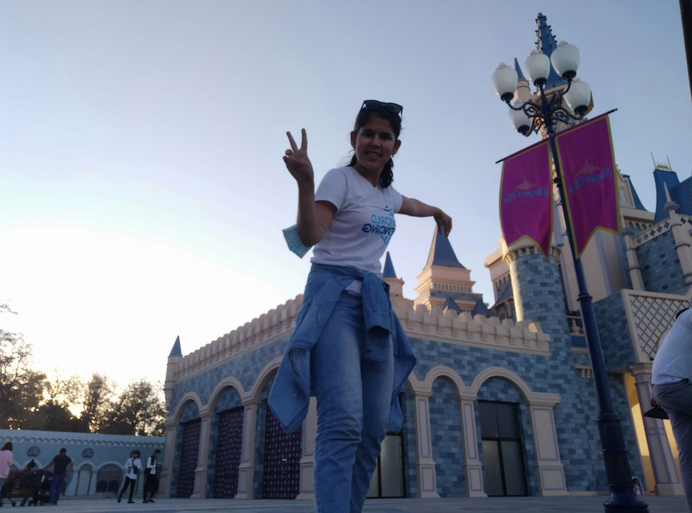
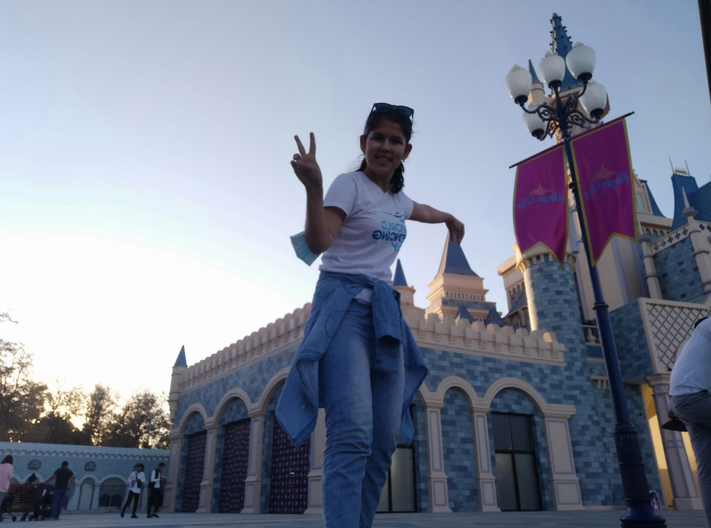
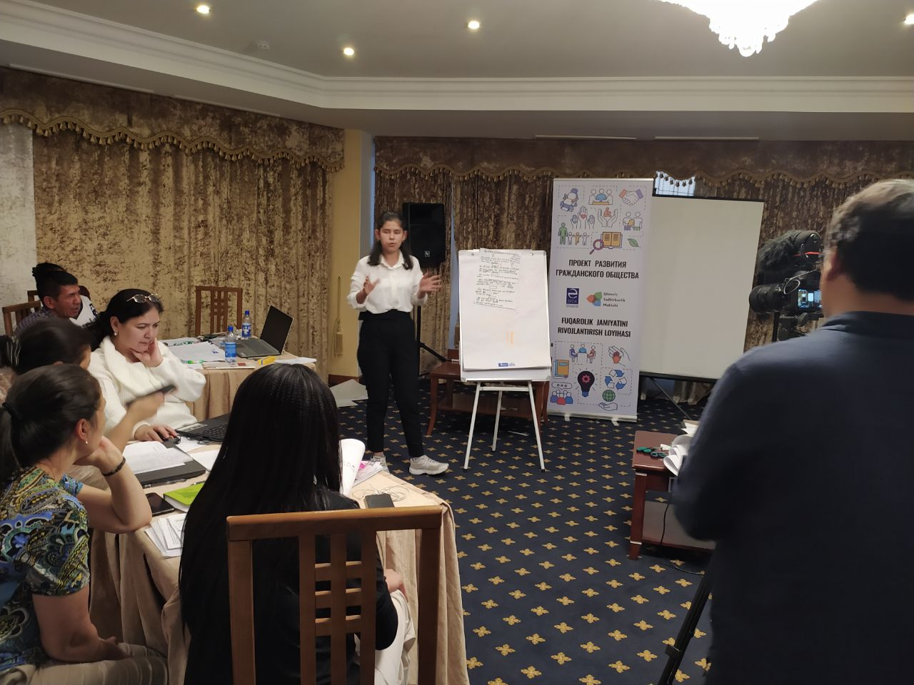
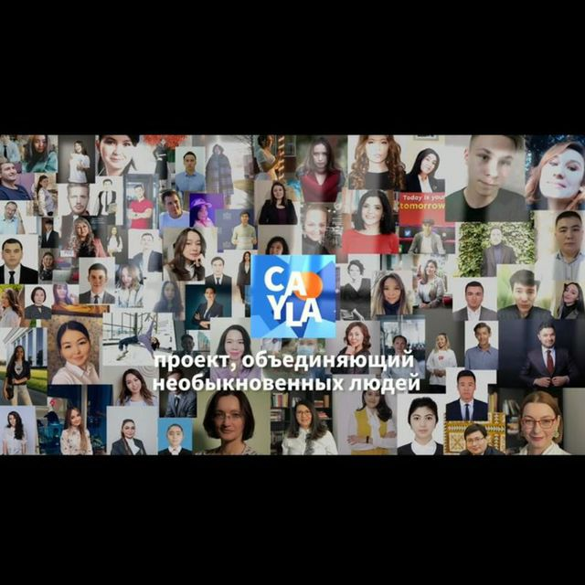
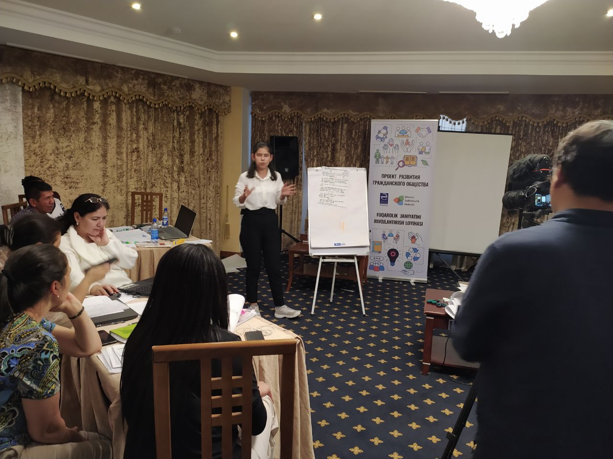
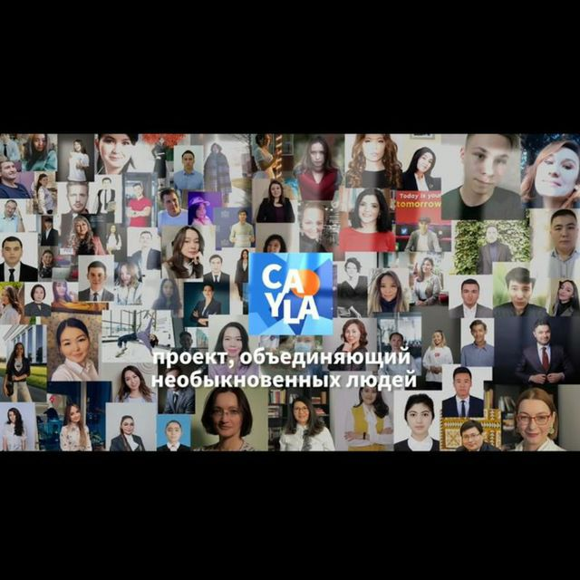
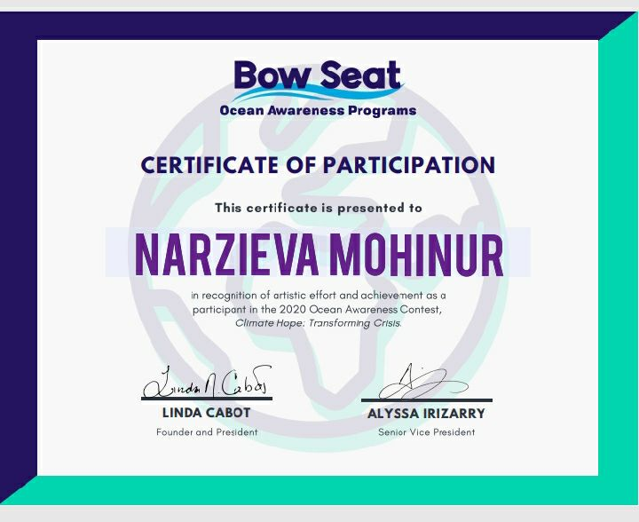
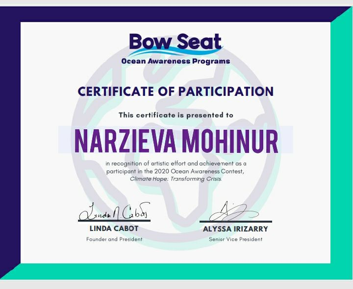

Creative music teacher, who has been working in state music school since 2019 September, and has been managing and organizing concerts, teaching almost 50 pupils with passion and love.
She is working with a team and building a strong
civil society with her abilities such as problem-solving, effective communication skills in Bukhara disabled community.
Thanks to the fast learning skills she acquires knowledge very fast even though she has such capabilities
she always tries her best to respect and get more and more knowledge from her mentors and teacher in the field of business IT and languages.
When many people complained about water quality in her city, in her 19 age, she
was able to get a grant from the government for beginning her first business which is social entrepreneurship called "aqua luxe water for everyone" and now has almost 500 paid clients and 700 non-paid, besides she is participating
startup competitions for winning investment for developing her business and enlarging it, moreover, helping many low-income families to access a clean water.
 



 





 
